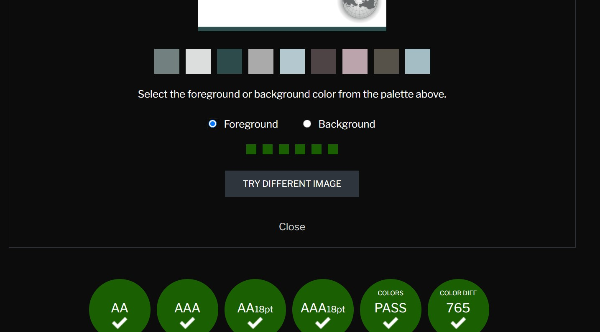
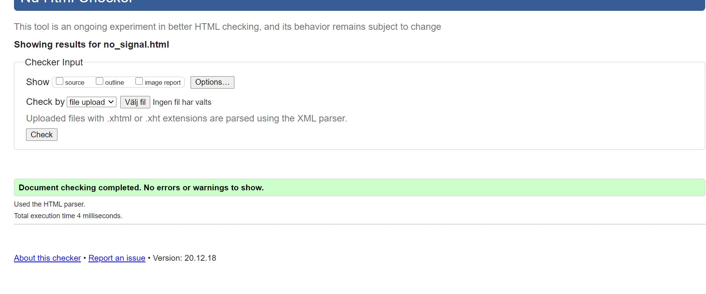

Dokumentation projekt HT
1. Idébeskrivning
Jag ska göra en hemsida till restauranggäster, tänker mig att målgruppen är vuxna personer eftersom det är oftast de som äter på restaurang.
2. Planering
2.1 Handskiss
2.2 Schema
| Vecka | På lektionerna | Utanför lektionerna |
| 47 |
|
|
| 48 |
|
|
| 49 |
|
|
| 50 |
|
|
3. Dokumentation
Lektioner vecka 47
På fredagen har jag skissat och gjort en layout för mina tre olika sidor för restaurangen. Jag har också kommit på lite olika höjder samt länger och vad som ska vara med på varje sida. Nästa vecka ska jag börja sätta upp skelettet för de olika sidorna och börja jobba med css.Det jag inte har kommit på är hur själva main-diven ska se ut, får nog se när jag väl börjar.


Lektioner vecka 48
Under torsdagen och fredagen har jag börjat jobba med html och css, jag har försökt att göra så att naven följer med när jag scrollar på samma ställe, fungerat tills den går förbi headern och sedan försvinner, får försöka fixa sedan. Annars har jag satt upp en layout som jag tror borde fungera och börjat jobba med css och höjder, längder, antalet länkar och annat.
Lektioner vecka 49
Fram tills tisdagen vecka 50 har jag haft problem med att få text över min bild på min startsida. Detta har jag äntligen lyckats lösa genom att göra denna lösning som bilderna visar, jag gjorde alltså om img till en background image och satte texten på en position: absolute. Jag har annars blivit klar med min startsida och är nöjd med resultatet som blivit. Jag har lyckats länka alla nav-delar och ska nästa vecka bli klar med de 2 andra sidorna samt göra en logga.
 Jag lyckades också fixa med naven så att den följde med hela tiden, satte den som position fixed med top: 0px; detta fungerade och naven följer nu med hela sidan.
Jag lyckades också fixa med naven så att den följde med hela tiden, satte den som position fixed med top: 0px; detta fungerade och naven följer nu med hela sidan.
Lektioner vecka 50
Jag har nu gjort klart min hemsida och jag tycker att det har blivit bra. Det jag märkte var att när jag använde position relative blev framförallt min meny-sida bredare än vad den normalt skulle bli. Jag tror att det beror på att position relative ändrar om textens placering vilket gör att den kanske blir längre än vad den normalt skulle bli. Tror inte jag kan fixa det här just nu eftersom jag inte helt har koll på hur position relative fungerar, tror att det kanske hade varit bättre att använda något annat än position relative, men är annars nöjd med resultatet. Ska bara göra klart loggan nu, är fortfarande inte säker på vad jag ska ha som logga, tänker mig något med en rå köttbit men vet inte. Jag lyckades också lösa ett problem med att när jag använde opacity på min nav blev allting mer genomskinligt, inte bara bakgrunden. Jag fixade detta genom att bara använda opacity på bakgrunden med hjälp av background-color. Jag behövde då hitta rätta färgen på rgb skalan för lightgray och kudne sedan lägga till opacity. Jag gjorde också klart loggan idag och jag tycker att den blev bra:

4. Testning
Jag testade att köra in olika delar på mina tre olika sidor, verkar som om alla fungerar bra med färger.

När jag testade min html märkte jag att alla sidor förutom meny.html fungerade:

Det som hade hänt på menysidan var att jag hade satt h4 som en förälder till ul taggen. Jag fixade detta genom att ta bort h4 taggen eftersom jag inte kände att den behövdes ändå:
Jag testade också min css kod och det verkade vara bra:
När jag testade olika webbläsare fungerade hemsidan på både google chrome och internet explorer. Något som skedde när jag använde firefox var att det uppkom en ny liten snutt av webbsida efter footern, jag vet faktiskt inte varför detta sker och jag tror inte att det är fel på min kod eftersom det ändå fungerar på både chrome och internet explorer. Jag skulle tro att firefox webbläsaren bara är större?
5. Utvärdering (skrivs i slutet av arbetet, innan inlämning)
Jag tycker att det gick bra att hitta på en layout och köra på den. Problemet för mig skulle jag säga är att jag tänker mycket på vissa saker och sedan inte använder det mest effektiva sättet att lösa något på. Exempelvis när jag gjrode menyn på menysidan. Det hade kanske varit lättare att använda något annat än position relative, men jag trodde att det skulle bli bra och körde på det, i slutändan fungerade det hyfsat men sidan blev lite bredare än vad jag hade tänkt mig vilket inte var bra. Detta är något jag ska tänka på till nästa gång. Jag blev annars nöjd med loggan, fastän det kanske inte var det mest komplicerade. Jag skrev tyvärr inte heller upp någon plan som jag följde men jag visste egentligen vad jag skulle göra tills varje lektion och jag kände inte att jag sköt upp projektet allt för mycket in till sista stund.
Jag är nöjd med hur sidan blev nu till slutet, men jag hade kunnat göra den bättre. Jag hade för det första kunnat jobba bättre med mina bilder så att de kanske var bättre upplösta. Jag borde kanske inte ha jobbat så mycket med position relative, fastän jag förstod vad det innebar att använda just detta visste jag inte exakt vilka konsekvenser det skulle få på sidan i stort. Jag märkte tyvärr vissa av konsekvenserna för sent för att hinna ändra på det så att det skulle fungera bättre. Skulle tro att det finns bättre positions än relative i just detta fall. Borde också ha testat min kod tidigare på olika sidor, men jag vet inte varför det blev konstigt på just firefox och inte varken google chrome eller internet explorer. Men i helhet är jag nöjd med detta första projekt.